← 모든 작업물WORK / 08
상세페이지
차량용품 상세 제작
2023- 제작 연도
- 2023
- 작업 기간
- 5일 소요 (촬영 레퍼런스 제작・촬영 일자 포함)
- 사용 프로그램
- Adobe Photoshop, Adobe Illustrator, Adobe Premiere, Adobe After Effects, Blender
기여도 및 작업 범위
기여도 디자인 100% 개인 작업 - 전체적인 레이아웃・이미지보정・디자인 효과・3D렌더링(공장측 fbx파일 지원) 사진 촬영 기여도 - 외부 촬영 (차량) : 80% 진행 (외 조명 보조) - 내부 촬영 : 100% 진행 기획서 70% 참여 순수 디자인 기간 총 3일(보정포함)
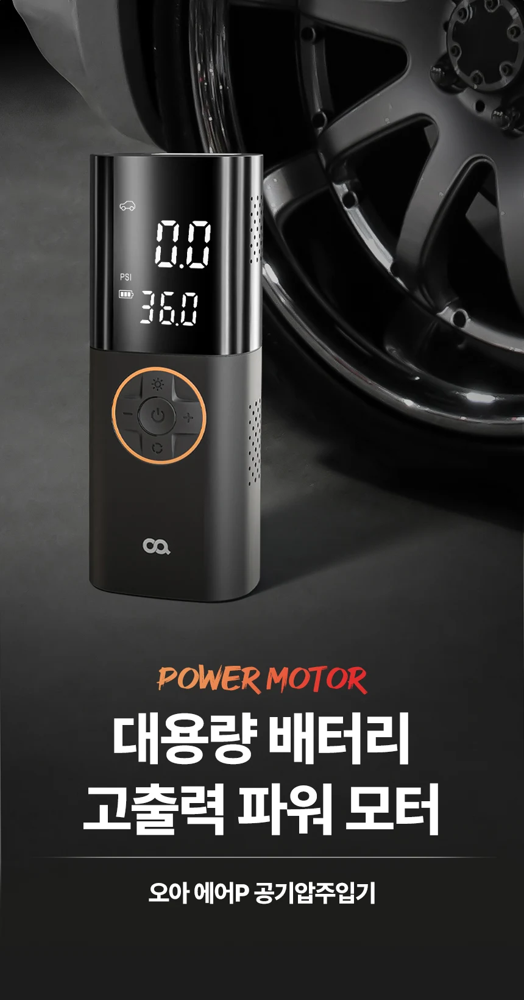
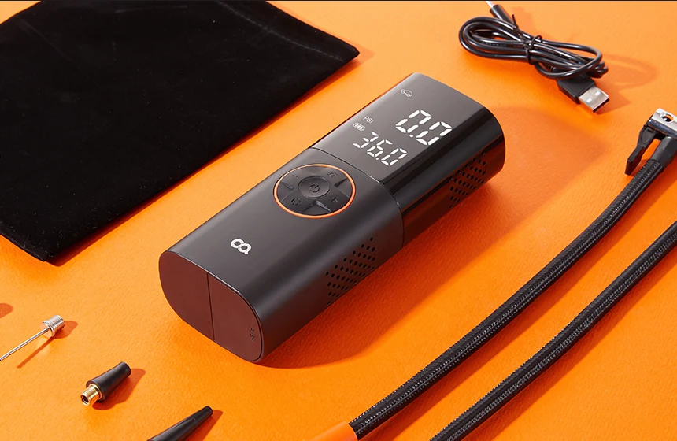
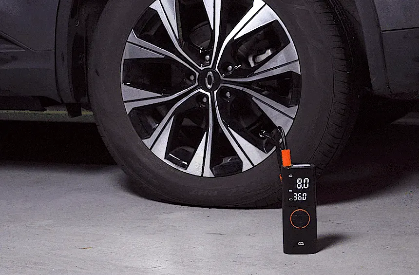
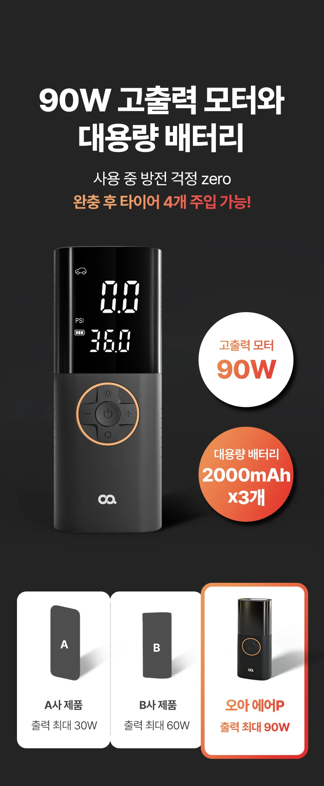
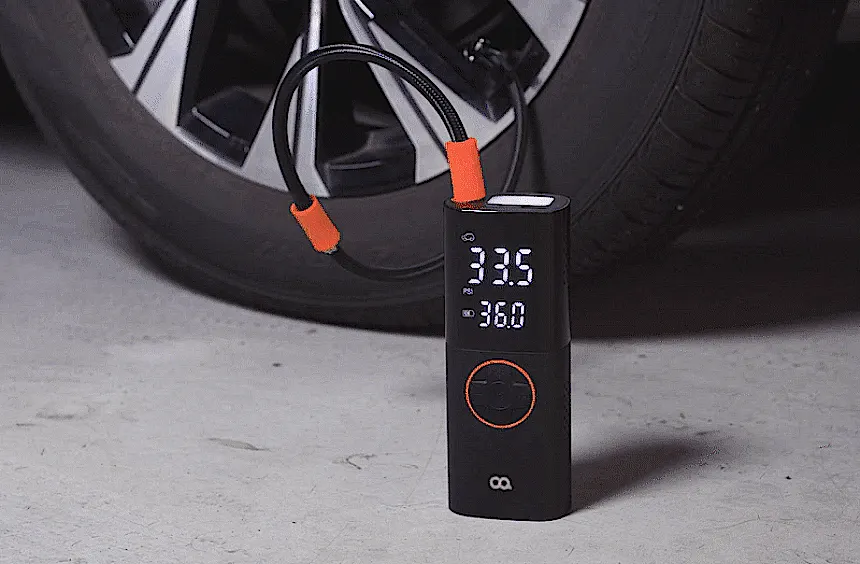
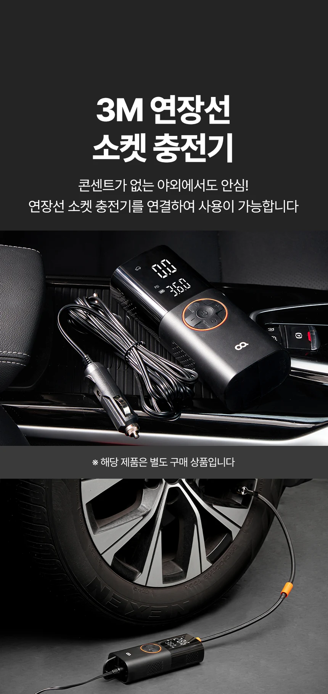
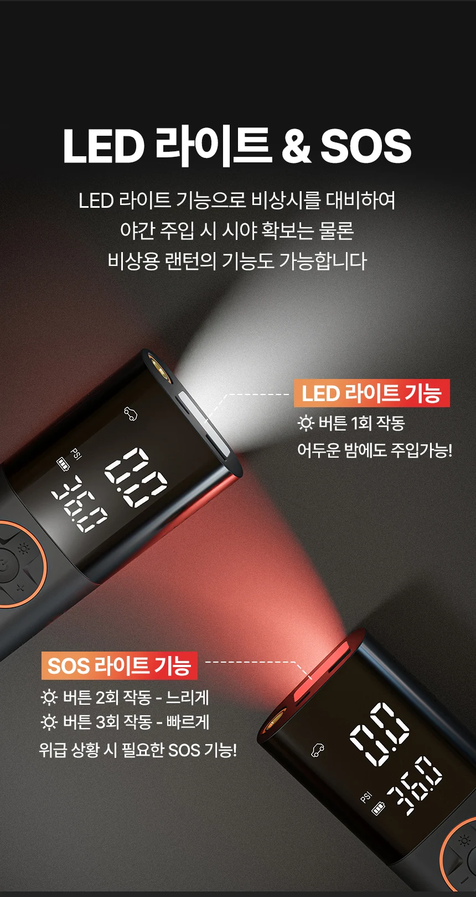
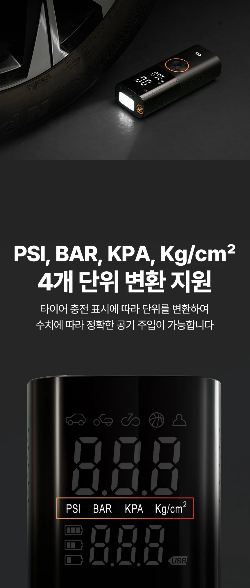
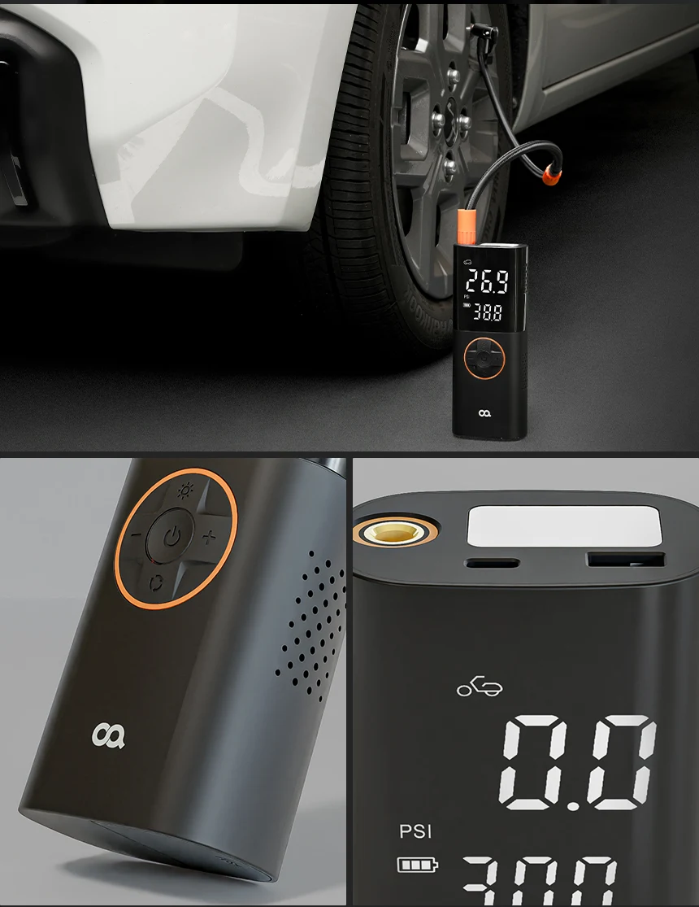
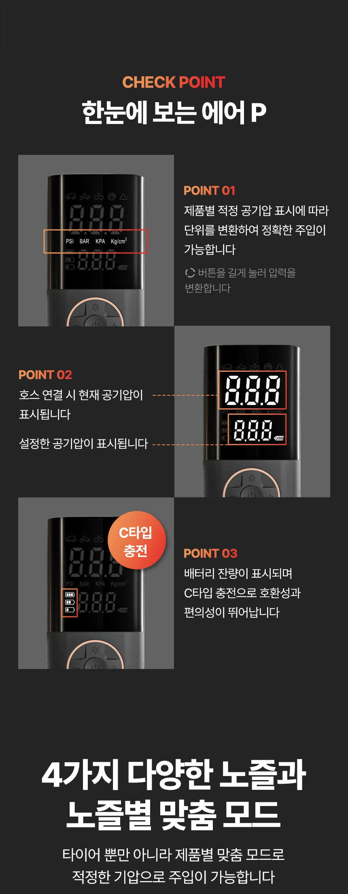
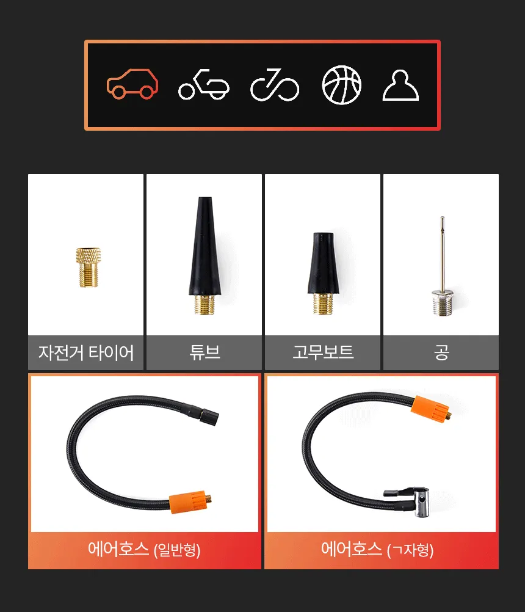
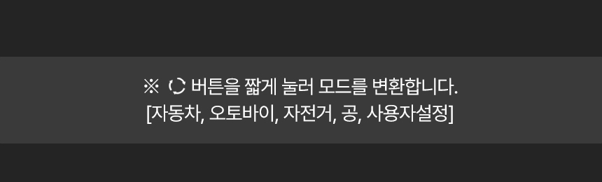
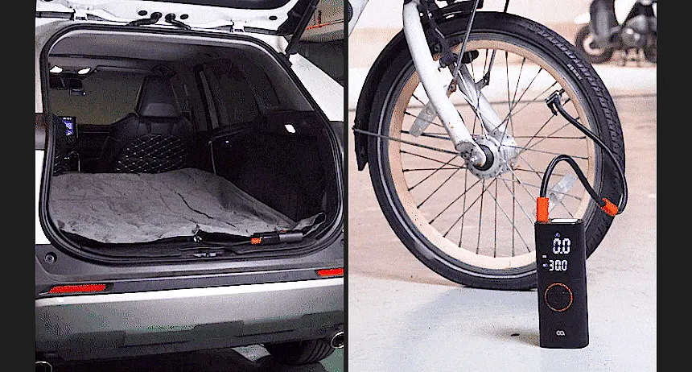
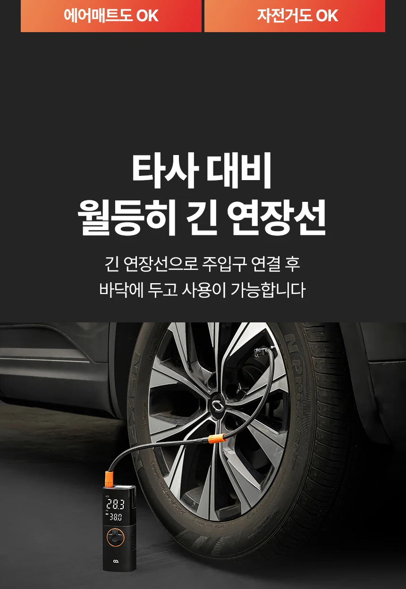
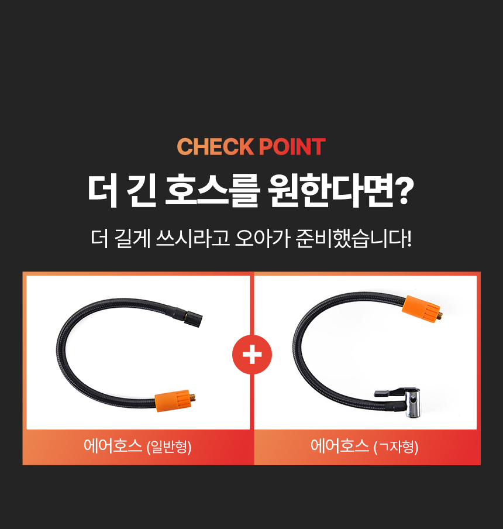
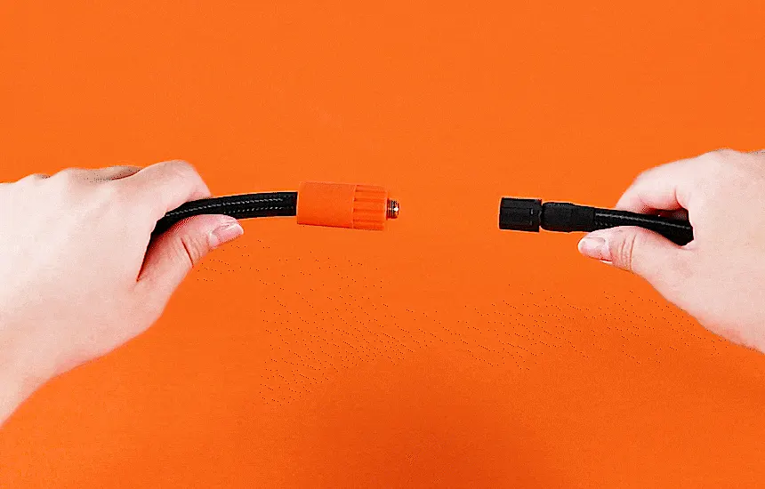
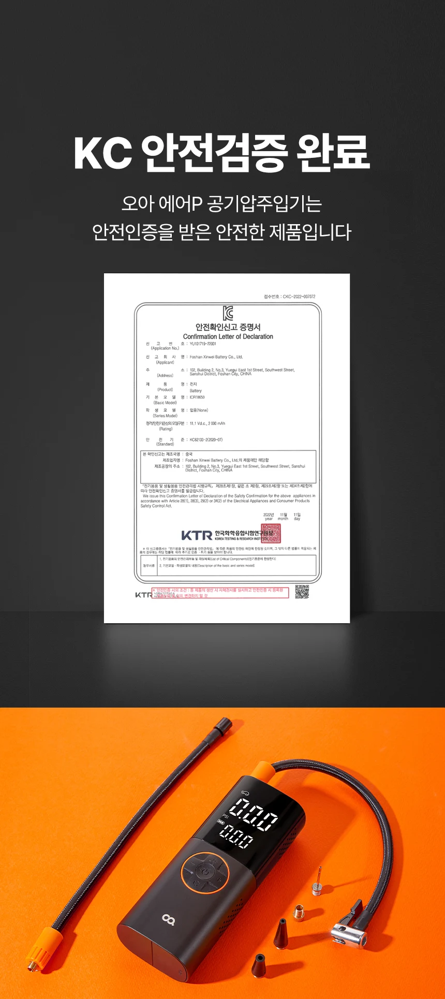
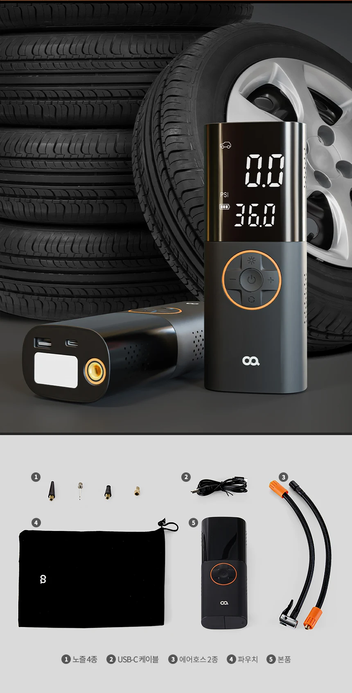
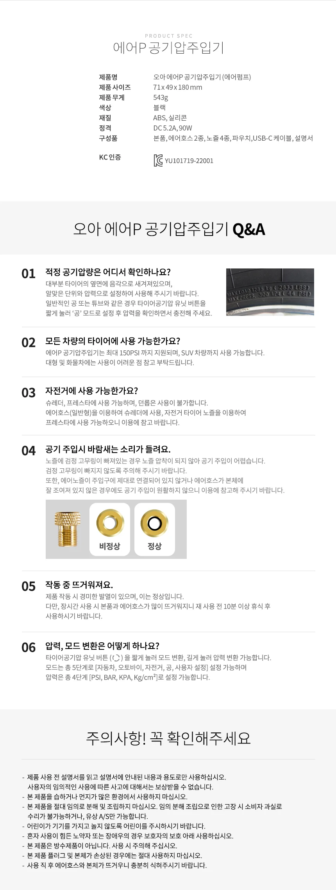